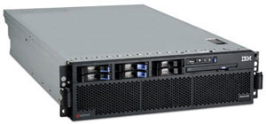
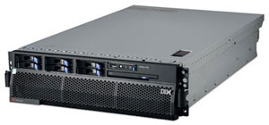

Виртуализацию платформ можно определить как создание логически разделенных вычислительных систем, которые работают на реальных платформах. По сравнению с виртуализацией в применении к дисковой памяти и серверам концепция виртуализации платформ идет глубже и включает все уровни системы - от прикладных программ и ОС до компонентов платформы, процессоров и средств связи.
Сегодня коэффициент загруженности инфраструктуры многих предприятий составляет всего примерно 15%. Виртуализация помогает таким компаниям оптимизировать имеющиеся у них ресурсы и развернуть службы и приложения, способные динамически адаптироваться к потребностям бизнеса. Объединяя в единый пул серверы, системы хранения данных, сетевое оборудование и другие устройства, образующие инфраструктуру предприятия, и обеспечивая совместное использование этих ресурсов разными приложениями и бизнес-процессами, виртуализация дает компаниям возможность быстро реагировать на изменения внутрикорпоративной и экономической среды, начиная от колебаний рабочих нагрузок и до стратегических перемен в бизнесе, на рынке и в клиентской базе.
В виртуализованных инфраструктурах работа персонала, функциональных процессов и технологий концентрируется в первую очередь на уровне сервиса; вычислительные емкости выделяются динамически; вся инфраструктура становится более простой и гибкой. Виртуализация позволяет компаниям добиться баланса между такими, на первый взгляд, антагонистическими бизнес-реалиями, как затраты и динамичность. Если раньше предприятия периодически проводили консолидацию для сокращения расходов, а затем децентрализацию для того, чтобы быть ближе к заказчику и быстрее реагировать на его запросы, то сегодня виртуализация позволяет решить обе эти задачи одновременно.
Стоит особо отметить, что виртуальные платформы легко воспринимаются пользователями и работают, как настоящие компьютеры. Благодаря тому, что они абстрактны и отделены от физических платформ и друг от друга, виртуальные платформы предоставляют простую переносимость, в высшей степени интеллектуальное функционирование и способность скрыть от пользователя свою сложность, в то же время повышая надежность системы. Заметим, что виртуализация предоставляет способ создания менее сложных систем, которые превращают компьютеры в более управляемые объекты. Кроме того, такое разделение обеспечивает более высокий уровень безопасности систем, сетей и приложений благодаря изоляции потенциально опасных подсистем от системных ресурсов низкого уровня и от других виртуальных платформ.
Виртуализация серверов меняет способ, которым ведущие ИТ-организации предоставляют ресурсы и управляют своими системами и приложениями, помогает консолидировать инфраструктуру, оптимизировать ее использование, снизить общие расходы и повысить оперативность бизнеса. Благодаря современному серверному ПО для виртуализации можно добиться консолидации множества ОС и наборов ПО на одной платформе на базе процессоров Intel, при этом ресурсы платформы могут предоставляться динамически для удовлетворения конкретных требований бизнеса и приложений.
Среди важнейших преимуществ программных решений по виртуализации серверов можно отметить следующие.
Гибкая консолидация серверов. С помощью виртуализации можно быстро провести консолидацию разнообразных ОС и приложений как на двухпроцессорных, так и на 16-процессорных серверах и более крупных платформах.
Улучшенная доступность и безопасность. Отказы ПО и цифровые атаки хакеров локализуются внутри виртуальных разделов, а разделы с функцией восстановления после отказа предоставляют простой экономичный подход для улучшения доступности.
Упрощенный переход на новую ОС и новое оборудование. Виртуализация серверов позволяет переносить уже существующие приложения и ОС, в среде которых они работают, в новые виртуальные разделы без изменения.
Хорошо налаженная система испытаний и разработки. На одной платформе можно разместить множество испытательных сред и множество экземпляров каждого набора ПО.
Возросшая оперативность бизнеса. Для размещения новых приложений, увеличения рабочей нагрузки и управления системой можно за несколько минут создать виртуальные разделы или изменить их размеры.
Платформа Virtualization Engine
В июле 2005 г. в соответствии со своей новой стратегией в области компьютерных систем корпорация IBM (http://www.ibm.com) представила основанную на стандартах платформу виртуализации, с помощью которой заказчики могут оптимизировать ИТ-ресурсы и повысить эффективность управления ими благодаря объединению в общие пулы серверов, сетей и систем хранения данных. Это помогает улучшить экономические показатели ИТ-инфраструктур и повысить коэффициент использования имеющихся у заказчика ИТ-активов.
Для объединения серверов и систем хранения платформа IBM Virtualization Engine 2.0 использует открытые интерфейсы, модули виртуализации и Web-сервисы. Бизнес-партнеры IBM предоставляют дополнительные решения, играющие важную роль при объединении в пул всех ресурсов вычислительного центра. При этом, по мнению руководителей корпорации, в результате четырехлетней научно-исследовательской и опытно-конструкторской деятельности IBM и ее бизнес-партнеров технология Virtualization Engine превратилась в основанную на открытых стандартах платформу с высокой степенью интеграции. Кроме того, эта платформа позволяет заказчику в значительно большей степени, чем когда бы то ни было, повысить эффективность использования ИТ-ресурсов и упростить управление всей открытой ИТ-инфраструктурой.
Предлагаемые IBM технологии виртуализации призваны упростить администрирование ИТ-ресурсов и решить тем самым проблему лавинообразного роста расходов на системное управление. Консоль Virtualization Engine обеспечивает единую точку обзора для всей топологии виртуализованной системной инфраструктуры и позволяет централизованно оценивать состояние входящих в нее систем и платформ. Это минимизирует требования к знанию конкретных операционных систем для многих сотрудников ИТ-служб.
Ниже охарактеризованы некоторые из разработанных компонентов и функций, включенных в состав Virtualization Engine 2.0.
Resource Dependency Services
Компонент Resource Dependency Services (RDS) повышает наглядность представления ИТ-ресурсов, позволяя сформировать новые или выявить существующие отношения между пользователями, ресурсами, приложениями и сетями, что является ключевым элементом при организации коллективной работы.
Возможности компонента RDS:
- автоматическое обнаружение ресурсов в IP-сети;
- сопоставление бизнес-процессов с ИТ-ресурсами;
- поддержка совместной работы с разработанным корпорацией продуктом - базой данных IBM Tivoli Change and Configuration Management;
- визуальное отображение топологии на консоли Virtualization Engine.
Integrated Virtual Management
Компонент Integrated Virtual Management (IVM) упрощает процесс создания и конфигурирования виртуальных систем. Простой в использовании Web-интерфейс сокращает процедуру виртуализации одного сервера до нескольких минут. Кроме того, IVM обеспечивает поддержку логических разделов LPAR и технологий виртуализации без использования аппаратной консоли управления.
Enterprise Workload Manager
Компонент Enterprise Workload Manager (EWM) позволяет оптимизировать системные ресурсы с целью улучшения реакции на колебания рабочей нагрузки. Кроме того, в новой версии этого компонента улучшена поддержка гетерогенных инфраструктур.
Возможности компонента EWM:
- динамическое управление разделами в системах на базе процессоров POWER5;
- более простые средства системного управления;
- интеграция со средствами выравнивания сетевой нагрузки в системах zSeries.
IBM Director 5.1
IBM Director 5.1 - это новая версия комплексного набора программных инструментов для непрерывного централизованного управления и автоматизации, поддерживающая более широкий спектр серверов IBM eServer и других систем IBM. Отличительные особенности новой версии IBM Director - простота использования и более открытый и всеобъемлющий набор инструментов. В ней расширен состав поддерживаемых платформ: реализована поддержка ОС Linux на системах IBM eServer zSeries и pSeries, а также поддержка нового мэйнфрейма IBM System z9. Появился также новый рациональный интерфейс, повышающий продуктивность, и оптимизированные агенты для упрощения развертывания.
Версия Director 5.1 поддерживает компонент Virtual Machine Manager - дополнительный модуль IBM Director, обеспечивающий интеграцию с решением VMware VirtualCenter и централизованное управление виртуальными/физическими компьютерами. Добавлена возможность проверки состояния ПО, упрощающая управление обновлениями. Новые инструменты разработки - в сочетании с основанными на стандартах конструктивными принципами IBM Director - позволяют бизнес-партнерам по средствам управления расширять возможности этого продукта, предоставляя заказчикам еще более обширный и гибкий набор функций.
Новая версия платформы IBM Virtualization Engine 2.0 позволяет распространить виртуализацию ИТ-ресурсов на все предприятие и даже за его рамки.
Виртуализация серверов
В состав семейства серверов IBM eServer (линеек pSeries, iSeries и zSeries, а также новых систем IBM System z9) входят различные компоненты технологии Virtualization Engine. Это средства динамического разбиения на разделы, управления рабочей нагрузкой, виртуализации сетевых ресурсов и ресурсов ввода-вывода - связывание которых между собой позволяет создать "матрицу виртуализации" в масштабе всего предприятия. Подобный модульный подход позволяет ускорить реализацию виртуализованной среды и обеспечить интеграцию ИТ-ресурсов в масштабе всего предприятия. Кроме того, с помощью программных средств виртуализации VMware к этой матрице виртуализации можно подключить системы IBM eServer xSeries и BladeCenter.
Виртуализация ресурсов хранения
Очень часто корпоративные системы хранения данных представляют собой наборы изолированных подсистем, число которых постоянно увеличивается. Такие изолированные островки информации усложняют управление хранением, увеличивают нагрузку на администраторов и повышают уровень требований к квалификации персонала. Кроме того, при запланированных и незапланированных остановках работы таких систем простои оказываются достаточно долгими. В результате снижается эффективность работы персонала, которому приходится управлять большими объемами данных, разбираться с разнородными устройствами хранения, различными протоколами передачи данных. Вся система становится менее эффективной и более уязвимой, при том что стоимость владения ею растет. Объемы данных в типичных корпоративных системах за год примерно удваиваются, соответственно растет и число проблем у отделов ИТ.
Значительно снизить остроту перечисленных проблем способна виртуализация хранения. Данный метод предполагает объединение всех разрозненных дисковых массивов в одно дисковое пространство, при котором устраняются последние физические связи между сервером и дисковой подсистемой. Естественные следствия такого объединения - снижение затрат на управление и персонал, автоматизация хранилища и управление данными на основе единых правил. Удобство реконфигурирования системы, более полная загрузка имеющихся ресурсов за счет предоставления доступа к одному дисковому массиву разным серверам и динамическое перераспределение дисковой памяти увеличивают отдачу от системы хранения в целом.
Применительно к сетям хранения на базе жестких дисков виртуализация - это объединение всего доступного дискового пространства, предоставленного в сеть хранения данных всеми имеющимися дисковыми массивами, в общий пул и организация доступа к этому пулу для всех пользователей SAN. При этом обеспечивается прозрачное (для компьютера, с которого происходит доступ к данным) представление системы хранения на уровне блоков: логический адрес блока никак не привязан к его реальному, физическому адресу. По сути, виртуализация разделяет логический и физический уровни доступа к данным. Выглядит это так, как будто пользователи и приложения имеют дело не с физическими устройствами хранения, а с логическими.
IBM решила расширить функциональность своего основного решения для виртуализации средств хранения - IBM TotalStorage SAN Volume Controller (SVC), обеспечив возможность взаимодействия между SVC и системами IBM zSeries, работающими в Linux-среде. В результате владельцы систем zSeries (через конфигурации, управляемые решением SVC) смогут применять устройства хранения, традиционно подключаемые к открытым средам, в том числе поддерживаемые решением SVC многоуровневые среды хранения.
Напомним, что SVC представляет собой распределенный кластер, состоящий в минимальной конфигурации из двух узлов. Этот кластер подключается в сеть хранения данных, в которой аппаратными средствами выделяются две физически независимые зоны - зона хостов (серверы приложений и любые клиенты SAN) и зона хранения (к которой относятся все дисковые массивы, задействованные в SAN). Контроллер SVC, подключенный к обеим зонам, отвечает за их коммутацию. Таким образом, обеспечиваются связи между сервером и SVC, между дисковым массивом и SVC, а также между узлами контроллера (эта связь устанавливается по тем же каналам Fibre Channel). Такое подключение фактически предоставляет системе виртуализационный слой между дисковыми подсистемами и серверами приложений. В частности, узел кластера SAN Volume Controller представляет собой Intel-сервер на основе специальной версии ОС Linux и ПО, поддерживающего виртуализацию, кэширование и расширенные функции копирования. Узлы объединяются в кластер парами - в терминологии SVC группами ввода-вывода (I/O Group). В каждой группе кэш-память на обоих узлах зеркалируется для повышения отказоустойчивости системы. Здесь также балансируется нагрузка между всеми портами.
Говоря о виртуализации ресурсов хранения, стоит отметить, что IBM и Network Appliance заявили о продолжении совместной деятельности по развитию технологий виртуализации. Основное направление этой деятельности - объединение технологий виртуализации ресурсов хранения от IBM и всей линейки систем хранения NetApp V-Series и FAS в единые интегрированные решения.
Виртуализация сетевых ресурсов
Применение решений партнеров IBM - таких, как технология InfiniBand и технология виртуализации средств ввода-вывода от Cisco - дополняет платформу Virtualization Engine средствами, которые более широко используют возможность управления динамическими разделами и улучшают интеграцию между механизмами виртуализации сетевых и серверных ресурсов в масштабе всего вычислительного центра.
Новые предложения от IBM
Осенью прошлого года IBM представила новые предложения в области виртуализации и заявила о будущих технологиях, укрепляющих более чем 30-летнее лидерство корпорации на рынке виртуализации. Нововведения в Virtualization Engine, охватывающие диапазон от ленточных устройств хранения данных до программных мастеров, учитывают потребности клиентов в различных отраслях и позволяют им применять технологии виртуализации для снижения затрат на ИТ и упрощения работы бизнеса. IBM также представила программу в области виртуализации для своих партнеров, которая дает независимым поставщикам ПО возможность создавать решения на основе платформ виртуализации IBM, что ускоряет проектирование решений при наличии готовых проверенных конструктивных блоков.
По мнению специалистов корпорации, прочность позиций IBM на рынке виртуализации подтверждается широтой и глубиной возможностей ее средств, которые позволяют виртуализовать почти 80% технологической инфраструктуры клиента. При этом уменьшение сложности технологической инфраструктуры становится непрерывным процессом.
Виртуализация ленточных систем хранения для открытых систем
IBM расширила свое присутствие в области виртуализации ленточных систем, представив новое предложение для подключения к Unix- и Intel-серверам. Это новое решение, получившее название IBM Virtualization Engine TS7510, представляет собой интегрированную дисковую и ленточную систему, которая позволяет клиентам сократить время резервного копирования и восстановления данных при одновременном улучшении использования ресурсов ленточных устройств.
Виртуализация на основе мастеров для Unix-серверов
Встроенный менеджер виртуализации (IVM) значительно упрощает реализацию технологий виртуализации в системах eServer p5. При помощи нового управляемого программами-мастерами интерфейса на базе браузера пользователь всего тремя щелчками мыши может создать микрораздел, готовый к установке AIX 5L или Linux. IVM поставляется бесплатно при приобретении опции Advanced POWER Virtualization для серверов eServer p5. Встроенный менеджер виртуализации призван значительно упростить и ускорить создание и настройку сред с большим количеством разделов благодаря поддержке технологии микроразделов IBM.
ПО системного управления
С октября прошлого года клиенты могут бесплатно загружать ПО системного управления IBM Director 5.10 для всех серверов IBM xSeries и BladeCenter, а с IV квартала - и для серверов iSeries, pSeries, System z9 и zSeries. Отметим, что IBM Director - это интегрированный пакет программных средств управления для централизованного систематизированного управления и автоматизации сложных ИТ-сред.
ПО виртуализации ресурсов хранения
IBM также объявила о выпуске следующей версии TotalStorage SAN Volume Controller версии 3.1. Это ПО, в частности, поддерживает вчетверо больше серверов, чем предыдущая версия, позволяя клиентам обслуживать среды большего размера, и работает с рядом новых ОС и наименований кластерного ПО. Для еще большей гибкости и широты выбора SAN Volume Controller позволяет заказчикам применять как собственные функции копирования поддерживаемых дисковых массивов, так и функции копирования SAN Volume Controller.
Виртуализация коммутации для xSeries
IBM объявила о расширении возможностей виртуализации своих серверов xSeries благодаря новым коммутаторам консоли (KVM) семейства Advanced Cabling Technology (ACT), обеспечивающим "виртуальное" управление серверами. Коммутаторы IBM ACT поддерживают технологию виртуальных носителей данных Virtual Media, что позволяет заказчику устанавливать, обновлять и загружать ПО в дистанционном режиме через Ethernet-подключение. Коммутаторы IBM ACT идеально подходят для централизованного управления сложными средами.
По мнению экспертов, представленные возможности виртуализации - это еще один шаг в реализации стратегии IBM, направленной на виртуализацию всех систем в своей линейке продукции.
Программа Ready For Virtualization
Вновь подчеркивая свое внимание к стратегии взаимной совместимости в средах на базе продукции разных поставщиков, IBM представила новую программу готовности к виртуализации - Ready for Virtualization, которая позволяет независимым поставщикам ПО тестировать и аттестовать свои решения с поддержкой виртуализации на серверных платформах IBM. Программа Ready for Virtualization дополняет анонсированную ранее программу Ready for Grid. Задача обеих программ - тестирование совместимости приложений с технологиями виртуализации IBM в целях создания совместимых решений для заказчиков. Ряд независимых поставщиков ПО, включая компании eReplenishment, Pegasystems и StreamServe, уже проверили на совместимость свои решения.
Технология Enterprise X-Architecture 3G
В начале прошлого года IBM впервые представила новую архитектуру Enterprise X-Architecture 3G (eServer X3), которая стала кульминацией трехлетних проектно-конструкторских работ стоимостью 100 млн долл. Проект был направлен на то, чтобы привнести возможности, унаследованные от мэйнфреймов, и усовершенствованные наукоемкие технологии в серверы IBM нового поколения, в частности, в 64-разрядный сервер IBM eServer xSeries на базе процессора Intel Xeon. По предварительным оценкам, архитектура X3 позволяла повысить производительность до 38% на четырех процессорах по сравнению с предыдущим поколением систем на базе процессоров Intel Xeon, а также давала возможность одновременно запускать 32- и 64-разрядные приложения и быстрее обрабатывать большие массивы информации. Тогда же корпорация представила новый сервер IBM eServer xSeries 366, который стал первым в запланированном семействе серверов IBM на базе Intel-архитектуры, способных поддерживать двухъядерные процессоры.
Напомним, что архитектура Х3, относящаяся к Enterprise X-Architecture третьего поколения, оптимизирована для консолидации серверов и программных приложений класса предприятий, а также для применения технологии виртуализации высшего уровня IBM Virtualization Engine. Необходимо отметить, что архитектура X3 также обеспечивает заказчикам IBM защиту инвестиций с помощью семейства серверов Intel-архитектуры, построенных в соответствии с концепцией "оплата по мере роста" и поддерживающих 32- и 64-разрядные приложения на одной и той же платформе, предоставляя возможность перехода на 64-разрядные приложения по мере необходимости.
Первое поколение архитектуры Enterprise X-Architecture (известное ранее как Summit), представленное в 2001 г., было хорошо принято заказчиками и помогло IBM занять ведущие позиции на рынке Intel-серверов с числом процессоров восемь и выше. И действительно, за истекший период рыночная доля IBM в секторе восьмипроцессорных серверов возросла с 18 до почти 60%. Кроме того, начиная с 2001 г., IBM неизменно остается самым быстроразвивающимся поставщиком серверов Intel-архитектуры в мире. Отметим, что серверы IBM на базе Enterprise X-Architecture 3G рассчитаны на поддержку нескольких поколений двухъядерных процессоров по таким параметрам, как мощность, тепловой режим и применяемый набор микросхем.
Сервер IBM eServer xSeries 366
Сервер IBM eServer xSeries 366 построен на базе 64-разрядного процессора Intel Xeon MP и платформы, поддерживающей память Active Memory на базе DDR2 и Active PCI-X 2.0, что соответствует новому стандарту для высокопроизводительных серверов I/O. Благодаря этой платформе, в сочетании с опытом IBM в разработке наборов микросхем, прирост общих показателей системы при 64 Гбайт используемой памяти может достигнуть 38% по сравнению с системами предыдущего поколения.
|  | Сервер IBM eServer xSeries 366.
|
В IBM eServer xSeries 366 значительно улучшено соотношение цена/производительность по сравнению с предшествующими поколениями, что устраняет разрыв в ценах между двухъядерными и четырехъядерными серийными платформами. IBM eServer xSeries 366 оптимизированы для консолидации серверов и приложений для предприятий, включая такое ПО, как IBM DB2 Universal Database, SAP, Microsoft SQL Server и Oracle.
На момент выпуска система x366 установила рекорд производительности для серверов с четырьмя процессорами Intel Xeon при обработке транзакций в реальном времени в тесте TPC-C. Сервер x366 продемонстрировал показатель 141504 tpmC (транзакций в минуту). Кроме того, он установил рекорд для четырехпроцессорных серверов в тесте 300GB TPC-H, оценивающем производительность бизнес-анализа. Сервер продемонстрировал показатель 7731,9 QphH@300GB (комбинированных запросов в час при обработке базы данных объемом 300 Гбайт), попав в десятку лучших по производительности в тесте TPC-H с использованием базы данных объемом 300 Гбайт.
Набор микросхем IBM HurricaneЦентральный элемент архитектуры X3 - набор микросхем третьего поколения Enterprise X-Architecture под названием Hurricane. Этот НМС обеспечивает IBM eServer xSeries 366 интегрированным процессором и контроллером памяти, который значительно понижает латентность, что, в свою очередь, ускоряет реакцию сервера и общие показатели производительности. НМС Hurricane был создан специально для архитектуры X3 командой разработчиков кроссплатформенных архитектур, в свое время накопивших опыт разработки при создании мэйнфреймов IBM. В НМС Hurricane значительно улучшено соотношение цена/производительность по сравнению с предыдущим поколением x365. Кроме того, есть ряд характерных только для него преимуществ. В частности, существенно улучшена ситуация с задержкой в цепи процессор-память, что критически важно в условиях рабочей нагрузки на коммерческих предприятиях. Виртуальная кэш-память XceL4v Dynamic Server Cache позволяет выборочно кэшировать с настолько низкой задержкой при обработке памяти, что физический кэш-чип L4 более не требуется. Из других ключевых особенностей Hurricane отметим следующие:
|
Четырехпроцессорный сервер IBM eServer xSeries 366 также поддерживает двухъядерные процессоры. Так, осенью прошлого года новый xSeries 366 с ПО DB2 UDB в тесте TPC-C, оценивающем скорость обработки транзакций в реальном времени, продемонстрировал результат 221017 tpmC, установив новый мировой рекорд производительности для четырехпроцессорных систем. Производительность сервера IBM xSeries 366 на базе двухъядерных процессоров существенно превысила производительность аналогичного сервера IBM eServer xSeries 366 на базе одноядерных процессоров.
Сервер IBM eServer xSeries 460
Летом 2005 г. IBM расширила свое семейство серверов с архитектурой X3, представив новый сервер IBM eServer xSeries 460, разработанный для сред постоянной готовности с высокой масштабируемостью. В начальной конфигурации x460 представляет собой недорогой сервер с поддержкой максимум четырех процессоров, легко масштабируемый вплоть до 32 процессоров в конфигурации из восьми блоков. Поддерживающая двухъядерные процессоры модель IBM eServer xSeries 460 отличается увеличенной масштабируемостью, повышенной производительностью кэш-памяти процессоров, расширяемостью памяти и ресурсов ввода-вывода, управляемостью и одновременной поддержкой 32-разрядных и 64-разрядных приложений. Среди ее целевых применений - обслуживание баз данных, ERP- и CRM-систем, консолидация серверов, специализированные приложения для вертикальных рынков. Архитектура X3 позволяет повысить производительность восьмипроцессорной конфигурации на величину до 60% по сравнению с восьмипроцессорным сервером IBM предыдущего поколения на базе Intel Xeon MP. При этом системы могут одновременно исполнять 32-разрядные и 64-разрядные приложения в собственном и виртуализованном режиме, быстрее обрабатывая огромные массивы данных.
К моменту выпуска данного сервера корпорация лидировала в сегменте Intel-серверов с числом процессоров восемь и более, обладая рыночной долей 54,5%. Сервер IBM eServer xSeries 460 и СУБД IBM DB2 UDB продемонстрировали производительность 250975 tpmC - наивысший на тот момент показатель для восьмипроцессорного Intel-сервера в стандартном отраслевом тесте производительности онлайновой обработки транзакций TPC-C.
В ноябре 2005 г. IBM обновила свое семейство серверов на базе технологии Enterprise X-Architecture 3G, представив новые системы на базе двухъядерных процессоров Intel Xeon серии 7000 (ранее известных под кодовым названием Paxville MP). Новые серверы IBM eServer xSeries 460, благодаря двухъядерным процессорам Intel Xeon, обеспечивают запас производительности, необходимый для решения таких задач, как вертикальное масштабирование серверов баз данных или консолидация серверов с использованием ведущего в отрасли продукта VMware ESX Server. В конфигурации начального уровня сервер IBM eServer x460 представляет собой доступный по цене четырехпроцессорный сервер. В то же время в конфигурации с восемью шасси система IBM eServer xSeries 460 легко масштабируется до 32 процессоров, позволяя заказчикам гибко наращивать вычислительные ресурсы в соответствии с растущими потребностями бизнеса.
|  | Сервер IBM eServer xSeries 460.
|
Сервер IBM eServer xSeries 260
К семейству серверов на базе технологии X3 Architecture относится и высокопроизводительный четырехпроцессорный сервер IBM xSeries 260, предназначенный для применения в удаленных офисах или для выполнения приложений с большим числом обращений к системам хранения. При высоте 7U сервер x260 позволяет установить до 12 жестких дисков Serial Attached SCSI форм-фактора 3,5 дюйма с улучшенными показателями емкости и скорости вращения, благодаря чему он будет хорошим решением для приложений, интенсивно работающих со средствами хранения данных. Заказчик может установить жесткие диски с емкостью до 300 Гбайт каждый, доведя общую емкость подсистемы хранения до 3,6 Тбайт.
Сервер x260 отвечает потребностям удаленных подразделений и филиалов гостиниц, банков и магазинов в большой емкости внутреннего хранения данных и резервном копировании ответственной бизнес-информации. Например, с помощью сервера x260 гостиница сможет хранить резервные копии своей документации и сведений о бронировании, а филиал банка обеспечит соблюдение требований к длительному хранению данных и представлению информации для аудита. Кроме того, к целевым заказчикам этого сервера относят малые и средние компании, а также предприятия розничной торговли (магазины игрушек, электротоваров, универсальные магазины и т. д.), в которых серверы x260 могут служить для поддержки торгово-кассовых терминалов, в качестве централизованных хранилищ данных инвентарного учета и продаж, а также для представления информации в головные офисы.
В корпорации считают, что IBM x260 - просто уникальный сервер. Благодаря сочетанию высокой производительности, мощных внутренних ресурсов хранения на базе жестких дисков Serial Attached SCSI и полного резервирования системы питания от сети 220/110 В, он оказывается практически идеальным четырехпроцессорным сервером для вычислительных центров с ограничениями по мощности питания, для применения в офисной среде и для многих международных рынков.
На момент выпуска сервер x260, поддерживающий двухъядерные технологии, комплектовался 64-разрядными процессорами Intel Xeon MP (кодовое название Cranford), что обеспечивало достаточно высокую производительность при сравнительно низкой цене. Электронные компоненты данного сервера идентичны компонентам x366 - сервера высотой 3U для установки в стойку. Модель x260 выпускается также в корпусе "башня" (tower) с возможностью питания от нестандартной сети напряжением 110 В. Этот сервер обладает полным резервированием по питанию и хорошо подходит для офисного применения. В перспективе модель x260 обеспечит заказчикам надежную защиту инвестиций, поскольку позволяет наращивать вычислительную мощность, объем оперативной памяти и емкость подсистемы хранения, что часто требуется для почтовых серверов и серверов баз данных.
В качестве внутреннего ленточного хранилища можно установить накопитель LTO емкостью до 800 Гбайт (приобретается отдельно), обеспечивающий локальное резервное копирование и автономное хранение данных в распределенной среде.
IBM xSeries x260 - третий сервер IBM на базе технологии X3. В тестах SPECint и SPECfp сервер x260 показал лучшие результаты среди опубликованных для четырехпроцессорных серверов на базе процессоров Intel Xeon. В тестах SPECint_rate2000 и SPECfp_rate2000, оценивающих общую пропускную способность всей системы, сервер x260 также продемонстрировал максимальные показатели среди опубликованных для четырехпроцессорных серверов на базе процессоров Intel Xeon с частотой 3,66 ГГц.
Тестирование VeriTestРезультаты тестирования, проведенного независимой испытательной фирмой VeriTest, подтвердили, что технология IBM X3 представляет собой идеальную платформу для виртуализации. Компания VeriTest оценивала производительность виртуализации сервера x366 при выполнении в виртуализованной среде под управлением ПО VMware ESX Server 2.5.1 смешанного набора приложений, отражающего реальные условия работы. Полученные компанией результаты свидетельствуют, что сервер IBM xSeries 366 на базе процессоров Intel Xeon превзошел по производительности виртуализации аналогичный по цене и конфигурации сервер конкурирующей компании на базе процессоров AMD Opteron при выполнении рабочих нагрузок Exchange и SQL, продемонстрировав преимущество по времени отклика до 41%. Результаты тестирования VeriTest показали, в частности, что технология X3 улучшает показатели виртуализованной среды по времени отклика благодаря особой архитектуре памяти, производительность которой с ростом нагрузки снижается не так быстро, как у других серверов. В обеих участвовавших в тестировании четырехпроцессорных системах было установлено по 16 Гбайт памяти, а цены обоих серверов по Интернет-каталогам различались не более чем на 3%. Благодаря огромному опыту IBM в создании наборов микросхем, нашедшему применение в сервере x366, преимущество последнего в производительности по сравнению с системами предыдущего поколения достигает 47% при 64 Гбайт установленной оперативной памяти. Корпорация IBM использует в своих Intel-серверах специализированные наборы микросхем собственной разработки, за счет чего модели семейства IBM xSeries способны существенно обгонять своих конкурентов. Сервер x366, заполняющий ценовую нишу между двухпроцессорными и четырехпроцессорными коммерческими платформами, - это оптимальное решение для виртуализации, консолидации серверов и выполнения корпоративных приложений.
|
Заключение
В исследованиях аналитических компаний отмечается постоянное стремление IBM к высокому качеству проектирования. В отличие от конкурентов, корпорация систематически реализует в линейке Intel-серверов возможности систем высокого уровня, что обеспечивает заказчикам дополнительное преимущество за счет непрерывного совершенствования вычислительных решений. Технология IBM Enterprise X-Architecture 3G позволяет воплотить заимствованные из мира мэйнфреймов возможности в новом поколении серверов IBM eServer xSeries на базе 64-разрядных процессоров Intel Xeon серии 7000. В сочетании с новыми процессорами Intel Xeon технология EXA 3G существенно повышает производительность по сравнению с предыдущим поколением систем на базе процессоров Intel Xeon, поддерживая одновременное исполнение 32-разрядных и 64-разрядных приложений и ускоряя обработку больших объемов данных.
Корпорация IBM давно заявила, что сектор x64 (системы на базе 64-разрядных процессоров с архитектурой x86) не относится к потребительским секторам рынка, и вложила значительные средства в соответствующую научно-исследовательскую деятельность, увенчавшуюся такими достижениями, как, в частности, технология IBM Enterprise X-Architecture 3G для традиционных x86-серверов.